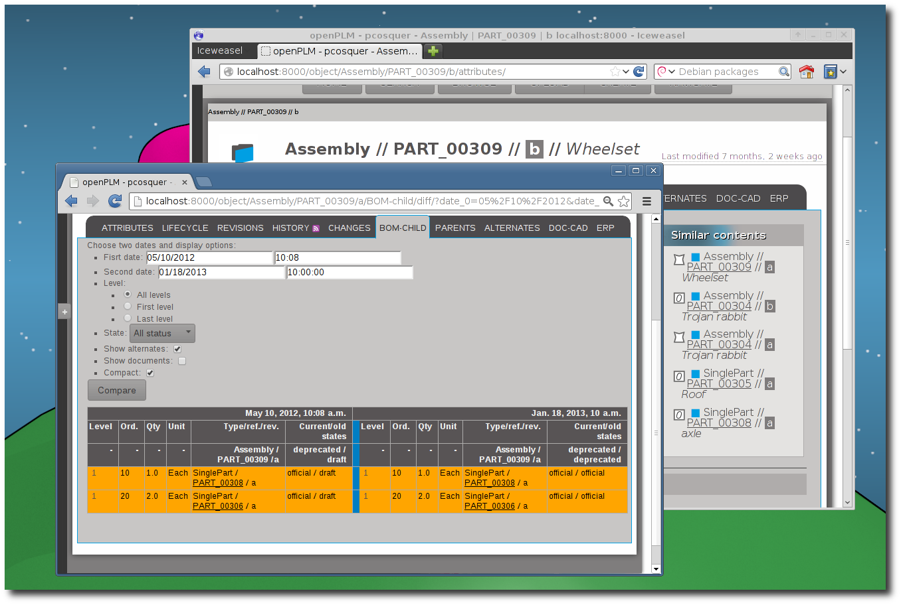

Table Of Contents
- 3.5.1. What’s new in OpenPLM 1.2
- 3.5.1.1. Introduction
- 3.5.1.2. What’s new for users
- 3.5.1.3. What’s new for administrators
- 3.5.1.4. Previous versions
Previous topic
Next topic
3.5.2. What’s new in OpenPLM 1.1

3.5.2. What’s new in OpenPLM 1.1
OpenPLM is a product oriented PLM solution. A product oriented PLM (Product Lifecycle Management) solution unifies all activities of the company in an ECM which structures data around the product. OpenPLM features a full web and user-friendly interface. OpenPLM is Free and Open Source Software. This means that all our work is free to use, modify and redistribute.
Since the last version, released 5 month ago, lots of changes have been made in OpenPLM 1.2. Some noteworthy highlights:

- It is now easier to upload files and create documents
- Several enhancements to the navigate feature
- Engineering Change Requests
- Alternate part links
You can now upload a file (or more) and create a new document in a few clicks.
It is now possible to asked several signers to promote or demote a part or document. The owner can be one of the first signers and he can easily warn other users when he think its work is ready.
You can compare a BOM at two different dates.
You can visualize a complete multi-level BOM including all attached documents:
It is possible to create a set of alternate parts. Each usage of a part can be replaced by one of its alternate. It is possible to include alternate parts in all BOM.
OpenPLM prevents incoherent situations (like a part parent of one of its alternate) when BOM are built.
If your administrator enables them, you will be able to create ECR (Engineering Change Requests) to request a change bound to several parts and documents.
If your administrator enables them, you will win badges by using OpenPLM ☺.
- When creating a part or a document, the group is set to the last selected group
- It is possible to choose the group of a new revision
- For each part and document, similar contents are displayed on the attributes page
- A new how-to, How to upgrade an installation of OpenPLM, is available.
A notable change of this version is the ability of openPLM to keep old minor revision of all files (all check-ins). You can configure which files are kept, see plmapp.files.deletable.
A new application, badges can be installed. It adds badges ala StackOverflow.
A new application, calendrier can be installed. It adds a calendar view of the timeline and histories pages and an ICal feed for each object.
A new application, ecr can be installed. It adds Engineering Change Request objects.
New lifecycles are available, you can load them by running the command ./manage.py loaddata extra_lifecycles